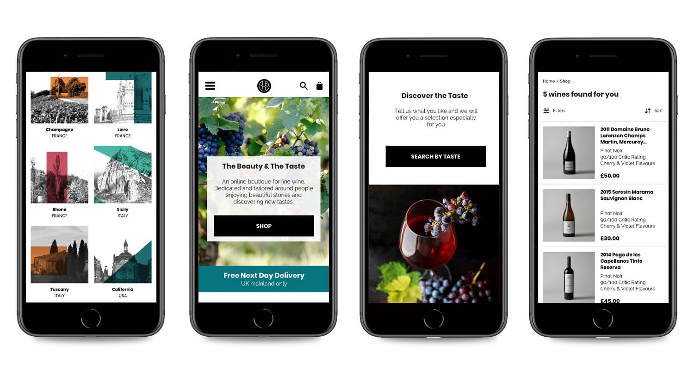

The Beauty and the Taste are a brand new online retail boutique, specialising in handpicked, high-rated fine wines from all over the world. They believe that good stories drive meaningful purchases.
Our job was primarily to reduce the bounce rate and identify any navigation blockers.
Through user tests and interviews we identified and redesigned problem pages to be less abstract and more focused on the sale of wine. We demystified the information architecture and enhanced the content hierarchy while maintaining our clients vision of beauty and taste.
We added a special Taste Profile feature that created personalised search results. It was well received because it spoke to the new wine enthusiast in simplified wine terms. This helped our user search via their own taste preference and learn more about wine during the process.
 Read Full Case StudyTo understand first impressions, ease of navigation and influences of purchase.
To locate problem pages and identify opportunites.
To narrow focus to one type of user.
To rapidly generate ideas with our client.
To test redesigns with users and present ideas to the client.